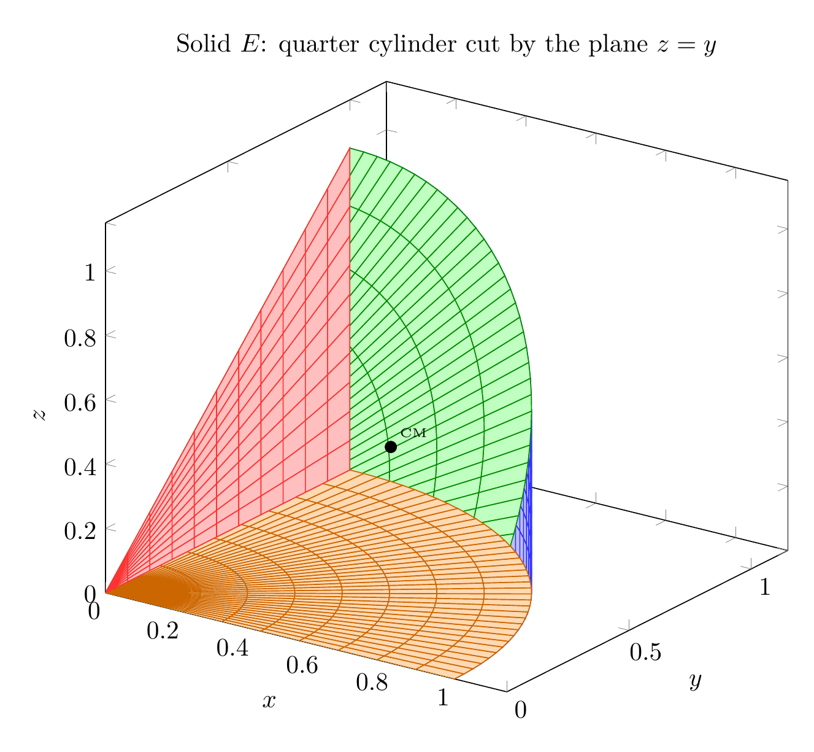
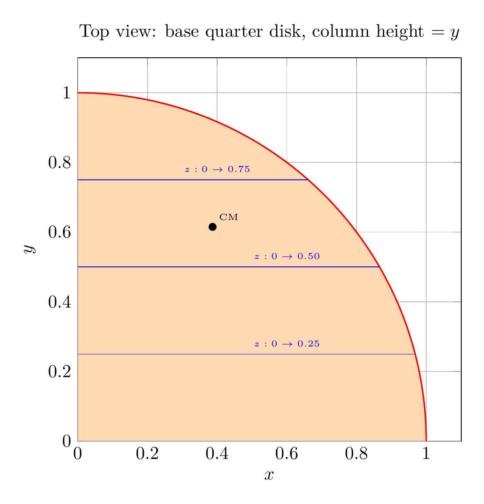

Please solve the problem in the following image.
(Image `20260928_150139_666133_utc_0800_0.png`. Alt text: Image: human_20260928_150139_666133_utc_0800)
20260928_150139_666133_utc_0800_0.png
End of problem
Answer
## Problem
Let $E$ be the solid in the first octant bounded by the cylinder $x^{2}+y^{2}=1$ and the planes $y=z$, $x=0$, $z=0$, with density $\rho(x,y,z)=1+x+y+z$. Find
**(a)** the mass, **(b)** the center of mass, **(c)** the moment of inertia about the $z$-axis.
---
## 1. Describe the region
The first octant gives $x\ge0,\ y\ge0,\ z\ge0$. The two planes $z=0$ and $z=y$ force $0\le z\le y$, and the cylinder caps the horizontal extent. Hence
$$
E=\{(x,y,z):\ x\ge0,\ y\ge0,\ x^{2}+y^{2}\le1,\ 0\le z\le y\}.
$$
Cylindrical coordinates fit perfectly: $x=r\cos\theta,\ y=r\sin\theta,\ z=z$, with
$$
0\le\theta\le\tfrac{\pi}{2},\qquad 0\le r\le1,\qquad 0\le z\le r\sin\theta,\qquad dV=r\,dz\,dr\,d\theta .
$$
The boundary surfaces are: the curved cylinder $x^2+y^2=1$, the top plane $z=y$, the bottom disk $z=0$, and the flat side $x=0$ (a triangle).
---
\documentclass[border=10pt]{standalone}
\usepackage{pgfplots}
\pgfplotsset{compat=1.18}
\begin{document}
\begin{tikzpicture}
\begin{axis}[
view={35}{25},
xlabel=$x$, ylabel=$y$, zlabel=$z$,
trig format plots=rad,
xmin=0,xmax=1.15,ymin=0,ymax=1.15,zmin=0,zmax=1.15,
width=11cm,height=10cm,
title={Solid $E$: quarter cylinder cut by the plane $z=y$}]
% cylinder curved side (blue)
\addplot3[surf, shader=faceted, fill=blue!25, faceted color=blue!80,
domain=0:1.5708, y domain=0:1, samples=40, samples y=10]
({cos(x)}, {sin(x)}, {y*sin(x)});
% top plane z=y (green)
\addplot3[surf, shader=faceted, fill=green!25, faceted color=green!55!black,
domain=0:1.5708, y domain=0:1, samples=40, samples y=10]
({y*cos(x)}, {y*sin(x)}, {y*sin(x)});
% bottom disk z=0 (orange)
\addplot3[surf, shader=faceted, fill=orange!30, faceted color=orange!80!black,
domain=0:1.5708, y domain=0:1, samples=40, samples y=10]
({y*cos(x)}, {y*sin(x)}, {0});
% side x=0 triangle (red)
\addplot3[surf, shader=faceted, fill=red!25, faceted color=red!80,
domain=0:1, y domain=0:1, samples=12]
({0}, {x}, {x*y});
% center of mass
\addplot3[only marks, mark=*, mark size=2.2pt, color=black]
coordinates {(0.387,0.615,0.322)};
\node at (axis cs:0.387,0.615,0.322) [above right,font=\tiny]{CM};
\end{axis}
\end{tikzpicture}
\end{document}

pgfplots_0.png
---
## 2. Geometry of $E$ (two orthogonal views)
A vertical slice at $x=0$ is the **triangle** $0\le z\le y\le1$. Projecting $E$ down onto the $xy$-plane gives the **quarter disk** $x^{2}+y^{2}\le1$; over each base point the column runs from $z=0$ up to the plane $z=y$. These two views explain the integration limits $0\le z\le r\sin\theta$ and $r\le1$.
---
\documentclass[border=10pt]{standalone}
\usepackage{pgfplots}
\pgfplotsset{compat=1.18}
\begin{document}
\begin{tikzpicture}
\begin{axis}[
xlabel=$x$, ylabel=$y$,
width=9cm,height=9cm,
xmin=0,xmax=1.1,ymin=0,ymax=1.1,
axis equal image,
grid=both,
trig format plots=deg,
title={Top view: base quarter disk, column height $=y$}]
% quarter disk projection (filled)
\addplot[fill=orange!30, draw=none, domain=0:90, samples=100]
({cos(x)},{sin(x)}) -- (axis cs:0,0) -- cycle;
% boundary arc
\addplot[red, thick, domain=0:90, samples=100]({cos(x)},{sin(x)});
% rays at constant y : z runs 0 -> y
\addplot[blue,thin] coordinates {(0,0.25)(0.9682458,0.25)};
\addplot[blue,thin] coordinates {(0,0.50)(0.8660254,0.50)};
\addplot[blue,thin] coordinates {(0,0.75)(0.6614378,0.75)};
\node[blue,font=\tiny] at (axis cs:0.60,0.28){$z:0\to0.25$};
\node[blue,font=\tiny] at (axis cs:0.60,0.53){$z:0\to0.50$};
\node[blue,font=\tiny] at (axis cs:0.40,0.78){$z:0\to0.75$};
\addplot[only marks, mark=*, mark size=2pt] coordinates {(0.387,0.615)};
\node at (axis cs:0.387,0.615)[above right,font=\tiny]{CM};
\end{axis}
\end{tikzpicture}
\end{document}

pgfplots_2.png
---
## 3. (a) Mass
$$
M=\iiint_E \rho\,dV=\int_0^{\pi/2}\!\int_0^{1}\!\int_0^{r\sin\theta}(1+r\cos\theta+r\sin\theta+z)\,r\,dz\,dr\,d\theta .
$$
The inner $z$-integral of each piece produces a factor $r\sin\theta$ (except for the $z$ term). Using $\displaystyle\int_0^{\pi/2}\cos\theta\sin\theta\,d\theta=\tfrac12$ and $\displaystyle\int_0^{\pi/2}\sin^2\theta\,d\theta=\tfrac{\pi}{4}$:
| piece | value |
|---|---|
| $\iiint 1\,dV=\int_0^{\pi/2}\!\int_0^1 r^2\sin\theta\,dr\,d\theta$ | $\dfrac13$ (the volume) |
| $\iiint x\,dV=\int_0^{\pi/2}\!\int_0^1 r^3\cos\theta\sin\theta\,dr\,d\theta$ | $\dfrac18$ |
| $\iiint y\,dV=\int_0^{\pi/2}\!\int_0^1 r^3\sin^2\theta\,dr\,d\theta$ | $\dfrac{\pi}{16}$ |
| $\iiint z\,dV=\int_0^{\pi/2}\!\int_0^1 \tfrac12 r^3\sin^2\theta\,dr\,d\theta$ | $\dfrac{\pi}{32}$ |
Adding,
$$
M=\frac13+\frac18+\frac{\pi}{16}+\frac{\pi}{32}=\frac{11}{24}+\frac{3\pi}{32}=\frac{44+9\pi}{96}\approx 0.75286 .
$$
---
## 4. (b) Center of mass
The center of mass uses the first moments $M_{yz}=\iiint x\rho,\ M_{xz}=\iiint y\rho,\ M_{xy}=\iiint z\rho$:
$$
M_{yz}=\frac{7}{24},\qquad
M_{xz}=\frac{\pi}{16}+\frac{4}{15}=\frac{15\pi+64}{240},\qquad
M_{xy}=\frac{\pi}{32}+\frac{13}{90}=\frac{45\pi+208}{1440}.
$$
Dividing by $M=\dfrac{44+9\pi}{96}$ gives
$$
\bar x=\frac{M_{yz}}{M}=\frac{28}{9\pi+44}\approx 0.38741,\qquad
\bar y=\frac{M_{xz}}{M}=\frac{2(15\pi+64)}{5(9\pi+44)}\approx 0.61501,
$$
$$
\bar z=\frac{M_{xy}}{M}=\frac{45\pi+208}{15(9\pi+44)}\approx 0.32226 .
$$
**Sanity check.** $\bar z\approx0.322<\bar y\approx0.615$ (since $z\le y$) and $\bar x^{2}+\bar y^{2}\approx0.53<1$, so the center of mass lies inside $E$, as it must. Note $\bar y$ is noticeably larger than $\bar x$: the density grows with $y$, and the solid is *taller* where $y$ is large.
---
## 5. (c) Moment of inertia about the $z$-axis
For a solid, $I_z=\iiint_E (x^{2}+y^{2})\,\rho\,dV=\iiint r^{2}\rho\; r\,dz\,dr\,d\theta$:
$$
I_z=\int_0^{\pi/2}\!\int_0^{1}\!\int_0^{r\sin\theta} r^{2}\,(1+r\cos\theta+r\sin\theta+z)\,r\,dz\,dr\,d\theta .
$$
Term by term:
| piece | value |
|---|---|
| $r^{2}\cdot1$ | $\int_0^{\pi/2}\!\int_0^1 r^4\sin\theta\,dr\,d\theta=\dfrac15$ |
| $r^{2}\cdot x$ | $\int_0^{\pi/2}\!\int_0^1 r^5\cos\theta\sin\theta\,dr\,d\theta=\dfrac1{12}$ |
| $r^{2}\cdot y$ | $\int_0^{\pi/2}\!\int_0^1 r^5\sin^2\theta\,dr\,d\theta=\dfrac{\pi}{24}$ |
| $r^{2}\cdot z$ | $\int_0^{\pi/2}\!\int_0^1 \tfrac12 r^5\sin^2\theta\,dr\,d\theta=\dfrac{\pi}{48}$ |
Hence
$$
I_z=\frac15+\frac1{12}+\frac{\pi}{24}+\frac{\pi}{48}=\frac{\pi}{16}+\frac{17}{60}=\frac{15\pi+68}{240}\approx 0.47968 .
$$
---
## 6. Final answers
$$
\boxed{\;M=\dfrac{44+9\pi}{96}\approx0.75286,\qquad
(\bar x,\bar y,\bar z)=\left(\dfrac{28}{9\pi+44},\ \dfrac{2(15\pi+64)}{5(9\pi+44)},\ \dfrac{45\pi+208}{15(9\pi+44)}\right)\approx(0.38741,\,0.61501,\,0.32226),\qquad
I_z=\dfrac{15\pi+68}{240}\approx0.47968\;}
$$
All of these were reproduced by a computer algebra system and independently confirmed by numerical triple integration.